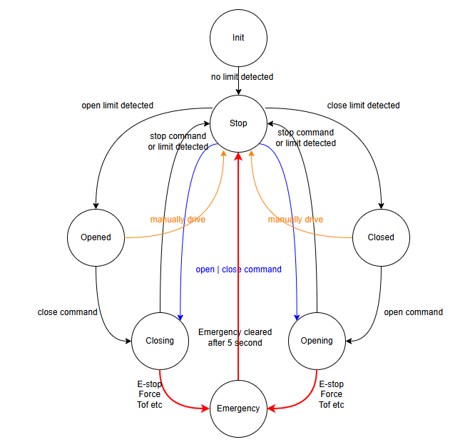

6월 방향성
버그 수정 및 안전성 향상 100% 기능 구현에 초점을 맞춘다.
이 후 리펙토링을 통해 코드 안정성을 높여 간다.
이를 위해 버그, 안정성 향상, 구현되지 않은 기능에 대해 정리하고 우선순위를 파악한다.
구현되지 않은 필수&개선 기능
Device manager motion controller로 부터 분리하기
- Wally
- Ceily
State pattern 적용
- State Profile대로 정의하기
- State pattern에 적용될 부분을 함수화 하기 
LED 마무리
- LED 시나리오 다시 리뷰하기
- Ceily 모션에 따라 LED 제어하는 부분 리뷰하기
- Wally 모션에 따라 LED 제어하기
- Ceily & Wally 버튼 LED 제어기능 구현하기
- Ceily 상승/하강 시 LED 밝기 변화 속도를 변수화 하기
토크 감지 기능 마무리
- wally 토크 모델 나누기
- 토크 파라미터 문서화하기
- 토크 파라미터 ble r/w 인터페이스 제공하기
- 토크 파라미터 최적화 하기
장치 관리
- 장치 상태 read 인터페이스 제공하기
- 장치 상태에 따라 동작 상태 결정하기
Kinematics
- State에 대해 속도를 Kinematics에서 가져오기
Wally
- S-curve 제어
- wally 시리얼 번호 적용
- Kinematics 로직 점검: 왜 한번에 맞춰지지 않지?
- 포토 센서 연동하기
- 현재 상태 BLE로 내보내기
- 토크 command 및 graph 정보 내보내기
- ble로 로그 내보내기
- Emergency state 추가하기
Ceily
- 다리와 침대 위치 연동하기
- ToF 센서가 연결되지 않았거나 동작하지 않으면(장비 Check), 하강하지 않는다.
- Emergency state 추가하기
작업자 설치
- 치수 설정하기
- Wally 토크 학습 작업자 Client 프로그램 만들기
- 작업자 프로그램 Client design으로 좀 깔끔하게 다듬기
- Client를 지지고 볶으며 정보를 출력하면서 나가야 한다.
- 캘리브레이션 기능도 펌웨어가 제공하는 기능을 이용한 Client에서 구현하는 것
필수 기능
- ToF 센서가 연결되지 않았거나 동작하지 않으면(장비 Check), 하강하지 않는다.
- 씰리 장시간 동작시 ToF Head가 에러상태에 빠져서 계속 on으로 들어와 있는 것
- ble 연결 안정화 및 통신 속도 확인
Backlog 1st
- Wally kinematics 로직 점검: 왜 한번에 맞춰지지 않지?
- 보드와 모터의 연결이 끊어지는 경우 긴급 정지 한다.
- 유닛 테스트 적용
- OTA
- User stop시에 S-Curve 정지
공장 설치
- 시리얼 제어 기능
Backlog 2nd
- Estop switch
- Flash config 버전 관리
- 토크 모델 성능 평가 기능 추가 및 리포팅
- 힘 적응 제어
- 메모리 분석
- Admin login
- 토크 모델 두 개씩 보유해서 왔다 갔다 할 수 있도록
침대 다리 - 침대 다리 프로파일 제공 - 침대 다리 이동 속도을 변수화 하기